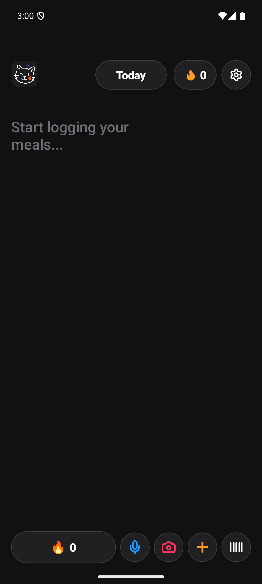
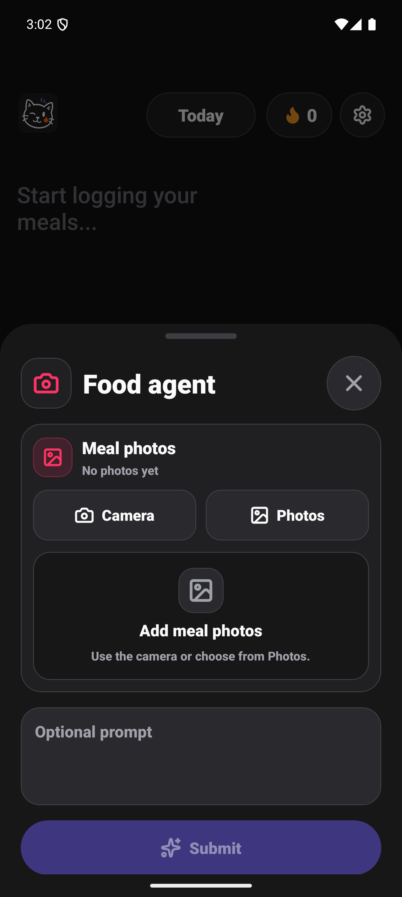
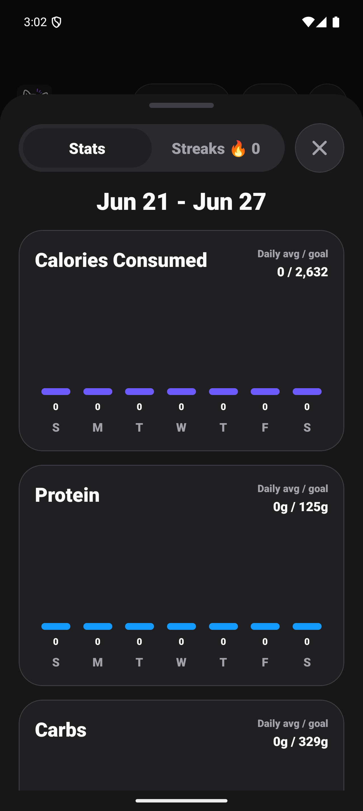

Amy Notes, Capture, Stats, Widget Release Conclusion
Final Status
Complete. The requested Today notes/calorie alignment, floating header, Food agent sheet cleanup, Stats average labels, Goals & Targets clarity, Local Data redesign, widget quick-log behavior, emulator smoke, local native build, and release prep were completed for Amy 1.0.7.
What Changed
- Today now keeps notes and calories in one aligned row-based scrolling surface, with floating logo/date/streak/settings controls above the log instead of cutting note rows at the top.
- The dock has extra keyboard clearance, and icon-only controls gained accessibility labels/hints.
- The Food agent sheet no longer repeats "Food agent" in the body. Meal/label photos now use a single capture panel with source buttons, empty state, preview strip, add/remove controls, and clearer disabled states.
- Stats cards now show daily average against the goal, avoiding the old week-total-vs-daily-goal wording.
- Goals & Targets now shows custom target status, goal type, saved vs pending calorie values, and macro target rows.
- Local Data now separates export and import flows, shows local data counts, and explains private backup boundaries.
- The mini Today widget is quick-log focused only and no longer displays what the user ate. Generated widget metadata supports horizontal and vertical resize with a 4x3 target.
- Release metadata advanced to Amy 1.0.7 / Android versionCode 9, including Fastlane changelog 9.
Parallel Lanes
- Mill
019f07c6-31ca-7e40-9e9a-73e118720dd2: Today notes/calorie alignment, floating header, keyboard clearance. - Nash
019f07c6-323a-7200-babd-e44e4416d030: Food/Label capture sheet cleanup and photo panel. - Ohm
019f07c6-3333-7ab1-85a9-9348d77f19cd: Stats, Goals & Targets, Local Data. - Planck
019f07c6-33e6-7440-b094-7afd686fac63: Android widget quick-log behavior and resize metadata. - Zeno
019f07cd-7151-76a2-9ee4-fcae86ee3bce: Impeccable review lane, PASS with P2/P3 follow-ups. - Darwin
019f07d2-5d80-7052-a459-ea2f1f5111ce: Settings/Stats follow-up polish from review findings. - Goodall
019f07d2-a846-7971-b3e4-c3d613c541fd: Today/Capture accessibility and token follow-up polish.
The user-requested Codex app thread creation API was not exposed in this environment. The orchestration used the available multi-agent worker tool instead and recorded that constraint in the plan.
Verification
npm test: PASS, TypeScripttsc --noEmit.npm run check:deps: PASS, Expo dependencies up to date.npx expo-doctor: PASS, 21/21 checks passed.git diff --check: PASS.node --check plugins/withAmyAndroidWidgets.js: PASS.npm run prebuild:android: PASS.- Generated widget checks: Today widget XML has
resizeMode="horizontal|vertical",targetCellWidth="4",targetCellHeight="3", and quick-log copy only. - Local native Gradle build: PASS from
/private/tmp/amy-v1.0.7-build.WLA1AR. aapt2 dump badging builds/amy-1.0.7-release.apk: PASS, packagecom.kaust.amy, versionName1.0.7, versionCode9.apksigner verify --print-certs builds/amy-1.0.7-release.apk: PASS, local Android debug certificate digestfac61745dc0903786fb9ede62a962b399f7348f0bb6f899b8332667591033b9c.- Android emulator smoke: installed APK, launched
com.kaust.amy/.MainActivity, openedamy://capture/photo, and openedamy://stats.
Build Artifact
- Local APK:
/Users/kaust/Documents/amy/builds/amy-1.0.7-release.apk - SHA-256:
0b0d6db47801a699e7ddbb85d0e9edc5d3252354856184e16d2e061229c3df43 - Size: 98 MB
Demo Evidence



Known Limitations
- Widget vertical resize was verified through generated metadata and provider code, not by dragging a launcher widget by hand.
- Photo model responses were not proven with a live OpenRouter image call during emulator smoke testing; the UI path and type checks passed.
- The local native APK is signed by the local Android debug certificate, matching the previous native local build style. It is suitable for direct GitHub APK distribution, not Play Store production signing.